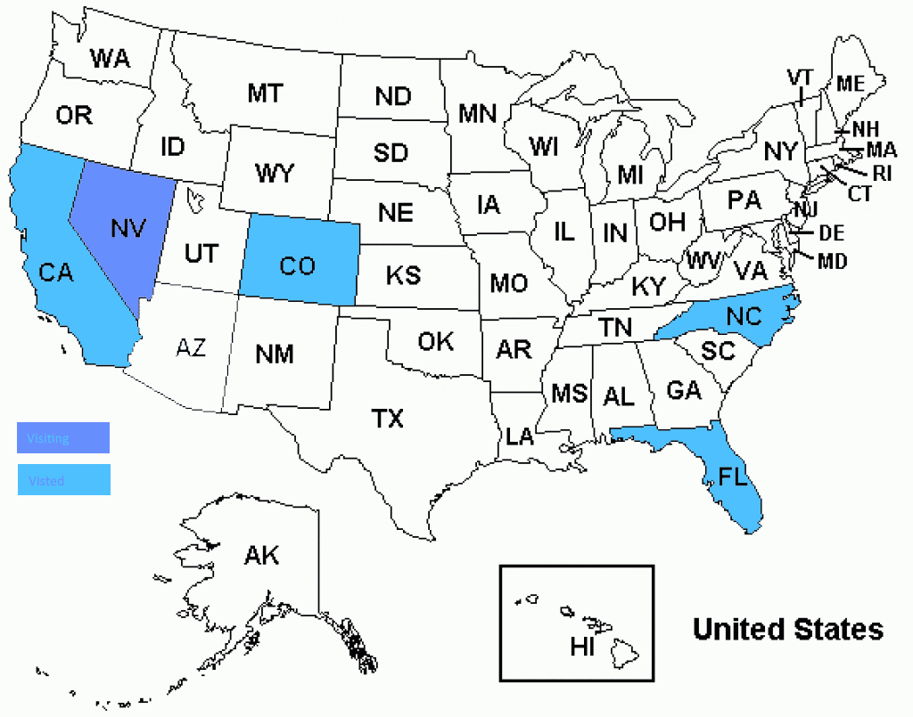
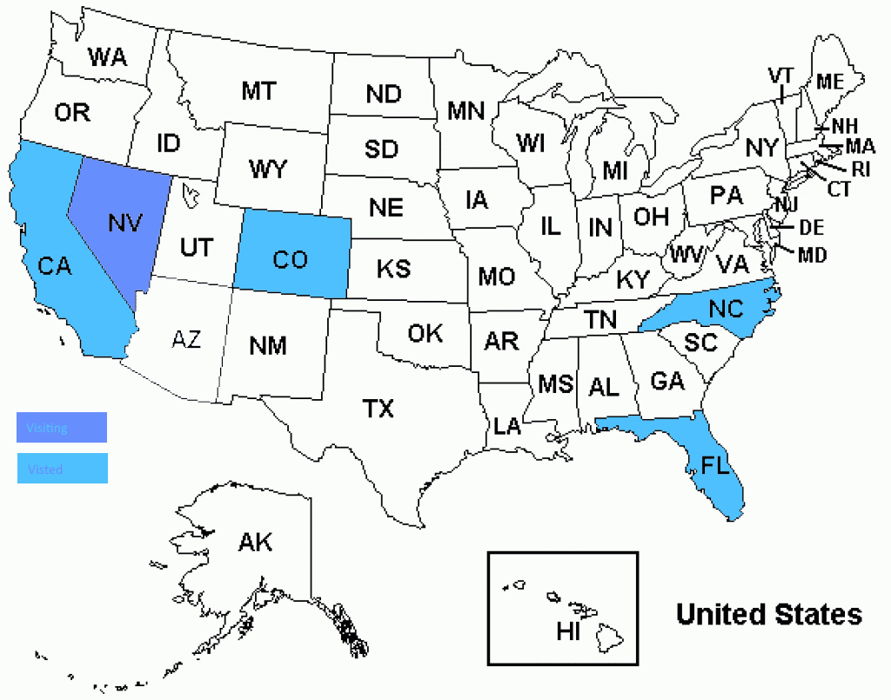

Travel
Below you can find all the states that I have traveled to.
Near the end of the year, I will be going to Nevada for my vacation.
Below you can find all the states that I have traveled to.
Near the end of the year, I will be going to Nevada for my vacation.